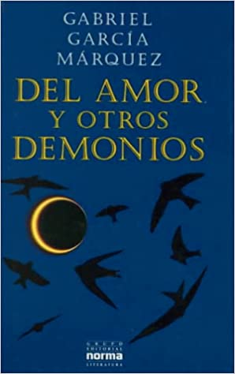

|
|
Recomendados:
|  |

|
|||
| La chica del tren | Almendra | Del amor y otros demonios | Rayuela | Harry Potter y la Orden del Fenix |
| Paula Hawkins | Won-pyung Sohn | Gabriel García Márquez | Julio Cortázar | J. K. Rowling |
| Link | Link | Link | Link | Link |
Algunos Autores:
| Ariana Godoy | Gabriel García Márquez | Stephen King | J. K. Rowling | Flor M. Salvador |

|

|
|||
|
Es una escritora Venezolana de 26 años y le apasionanla lectura y el buen café. Su amor por la escritura nació cuando apenas era una niña y leía cuentos infantiles.No tardó mucho tiempo en escribir sus propias historias y fue en su adolescencia cuando se animó a publicarlas en Wattpad.com.
|
Gabriel José de la Concordia García Márquez fue un escritor y periodista colombiano. Reconocido principalmente por sus novelas y cuentos, también escribió narrativa de no ficción, discursos, reportajes, críticas cinematográficas y memorias. Fue conocido como Gabo, y familiarmente y por sus amigos como Gabito.
|
Stephen Edwin King, más conocido como Stephen King y ocasionalmente por su pseudónimo Richard Bachman, es un escritor estadounidense de novelas de terror, ficción sobrenatural, misterio, ciencia ficción y literatura fantástica.
|
Joanne Rowling, quien escribe bajo los seudónimos J. K. Rowling y Robert Galbraith, es una escritora, productora de cine y guionista británica, conocida por ser la autora de la serie de libros Harry Potter, que han superado los quinientos millones de ejemplares vendidos.
|
Autora mexicana nacida el 25 de diciembre de 1998, Flor M. Salvador comenzó a hacerse conocida en el panorama literario a través de la plataforma Wattpad bajo el nombre Ekilorhe.Estudiante de Medicina en la Universidad Autónoma del Carmen, Salvador sintió gran pasión por las letras desde bien pequeña.
|
Frases de Algunos libros: